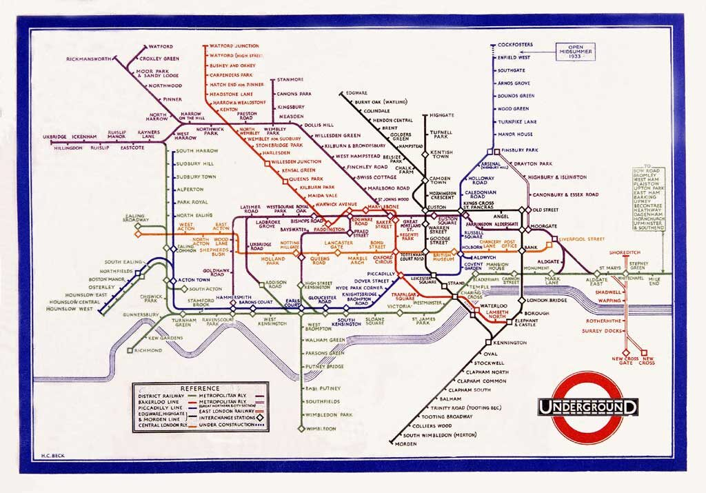

Diseño editorial · 2026
Harry Beck
Biografía digital sobre el diseñador que transformó la manera de representar las redes de transporte público.

Contexto
El encargo
El primer ejercicio de la asignatura consistía en crear una biografía utilizando únicamente HTML semántico.
Elegí a Harry Beck por la claridad de su mapa del metro de Londres y por su importancia dentro del diseño de información.
Proceso
Organizar la información
El contenido se dividió en biografía, proyectos destacados y datos curiosos. La jerarquía de títulos permite recorrer la página de forma ordenada.

Resultado
Una biografía clara
El resultado es una página sencilla que utiliza header, main, section, figure y footer. Los enlaces internos y externos ayudan a completar la lectura.
Ficha técnica
- Año: 2026
- Asignatura: Diseño Web
- Herramientas: HTML
- Tipo: Proyecto académico